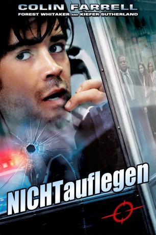

#1633 Nicht auflegen!
Alternativ: Phone Booth
 
 IMDB-Wertung: 7.1 / 10
IMDB-Wertung: 7.1 / 10  Metascore: 56
Metascore: 56 
Stu Shepard ist ein arroganter Medienagent, der gnadenlos Menschen gegeneinander ausspielt und mit ihnen handelt. Dies tut er meist mit mehreren Handys auf offener Straße, während sein Assistent kaum Schritt halten kann. Als er mit seiner Geliebten über eine Telefonzelle anrufen will, und diese gleich zurückrufen will, da sie gerade keine Zeit hat, verändert sich sein Leben schlagartig. Am anderen Ende ist ein Sniper, der ihm das Lebenslicht auspustet, sobald er den Hörer auflegt...
Jahr: 2002
Dauer: 81 Minuten
FSK: 16
Land: USA Studio: 20th Century FoxTonspuren: DTS - ,
Untertitel: Deutsch,
Auflösung: 1080p (1920x816) Größe: 7352 MB
Genre: Thriller
Regisseur:  Joel Schumacher
Joel Schumacher
Drehbuch: Larry Cohen
Soundtrack: Harry Gregson-Williams
Darsteller:
 Colin Farrell als Stu Shepard
Colin Farrell als Stu Shepard Kiefer Sutherland als The Caller
Kiefer Sutherland als The Caller Forest Whitaker als Captain Ramey
Forest Whitaker als Captain Ramey Radha Mitchell als Kelly Shepard
Radha Mitchell als Kelly Shepard Katie Holmes als Pamela McFadden
Katie Holmes als Pamela McFadden Paula Jai Parker als Felicia
Paula Jai Parker als Felicia Arian Ash als Corky
Arian Ash als Corky Tia Texada als Asia
Tia Texada als Asia John Enos III als Leon
John Enos III als Leon Richard T. Jones als Sergeant Cole
Richard T. Jones als Sergeant Cole- Keith Nobbs als Adam
 Dell Yount als Pizza Guy
Dell Yount als Pizza Guy James MacDonald als Negotiator
James MacDonald als Negotiator Josh Pais als Mario
Josh Pais als Mario Yorgo Constantine als ESU Commander
Yorgo Constantine als ESU Commander- Colin Patrick Lynch als ESU Technician
- Seth William Meier als Officer McDuff
- Svetlana Efremova als Erica
- Billy Erb als Lars
 Domenick Lombardozzi als Wyatt
Domenick Lombardozzi als Wyatt Maile Flanagan als Lana
Maile Flanagan als Lana- Tom Reynolds als Richard
 Julio Oscar Mechoso als Hispanic Medic
Julio Oscar Mechoso als Hispanic Medic- Karara Muhoro als Nigerian Vendor
- Dean Cochran als Reporter #1
 Tory Kittles als Reporter #3
Tory Kittles als Reporter #3- Bruce Roberts als Reporter #4
- Mary Randle als Dispatcher
- Phil Paul Call als Driver , uncredited
- Mia Cottet als Lu Ann , uncredited
 Ben Foster als Big Q , uncredited
Ben Foster als Big Q , uncredited- Manley Henry als Business Man , uncredited
- Enrique Hernandez als Delivery Person , uncredited
- Joshua Kalef als Bomb Squad , uncredited
 James Madio als Police Officer , uncredited
James Madio als Police Officer , uncredited- Daniel Mandehr als Detective Kale , uncredited
- Troy Gilbert als ESU Sniper
- Richard Paradise als ESU Guy
- Zidu Chen als Korean Husband
- Shu Lan Tuan als Korean Wife
- Amy Kowallis als Reporter #2
- Tyree Michael Simpson als Doorman
- Dean Tarrolly als Newscaster
- Paul Fontana als Dispatcher
- Michael Arturo als Policeman , uncredited
- Jared Huckaby als 1st Officer , uncredited
- Chris Huvane als Wiseass , uncredited
- Rana Morrison als Woman in Street Crowd , uncredited
- Kim Posnett als News Anchor , uncredited
- Emmett Ivor Thomas als Extra , uncredited
Datei: X:\2002\Nicht auflegen! (2002, FSK16, 1920x816).mkv seit 28.07.2015
Festplatte: HD 1996-2002
 Es gibt insgesamt 93 Filme in der Gruppe '2002'
Es gibt insgesamt 93 Filme in der Gruppe '2002'